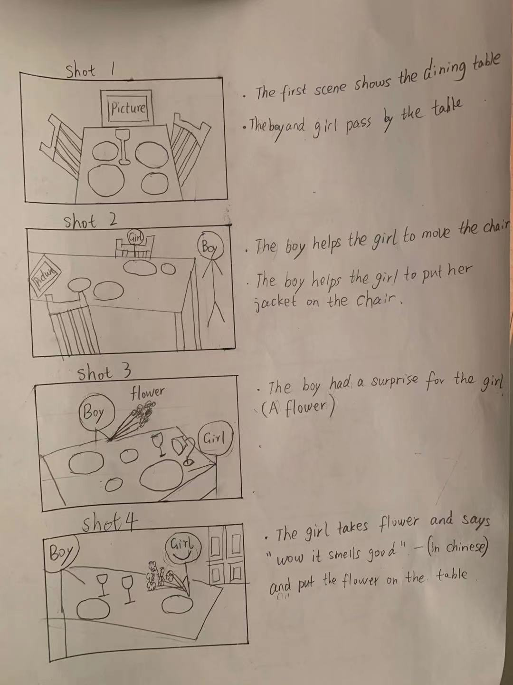
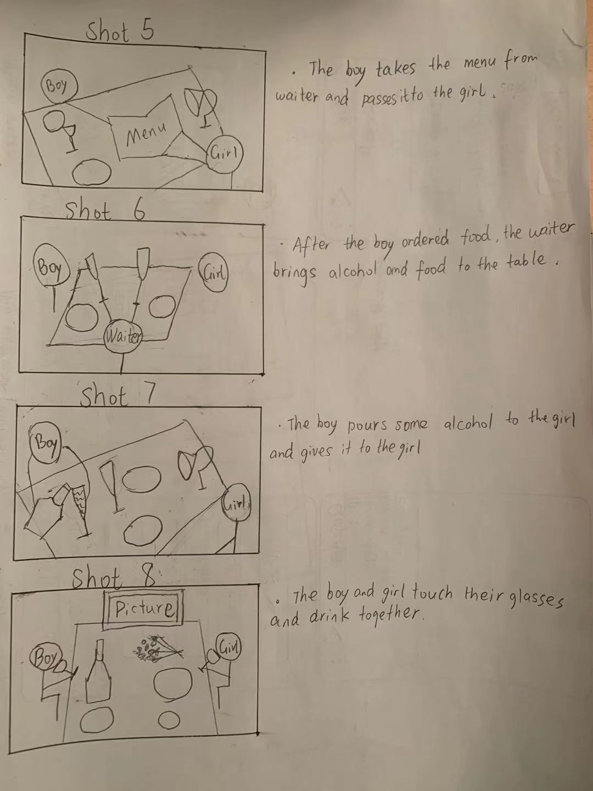

Video planning and studio task
List of points below:
Topic: Chinese dating culture
- The process of dating is romantic and respectful.
- The first date is usually in a public place, such as a restaurant.
- Guys usually prepare a surprise for girls.
- Girls usually behave very conservatively.
- Guys usually pay for the first date.
My storyboard:


Answers for studio task:
Answers for Mr.Jack's studio:
- The window is open, so there is light and sound from outside. It would be better to close the window and cover it with a curtain.
- Mp3 format is lossy, so he should record with WAV format since it's lossless.
- Camera microphone is not good at recording sound, so it would be better to use a professional microphone.
Answers for Mr.John's studio
- There is not enough light in the room, so to improve he needs good lightning.
- The air conditioning should be switched off since it might be noisy, which would affect the quality of his videos.
- His backgound enviroment is not very pleasing to the eye, he should decorate it by adding plants or some colorful lighting, for example.